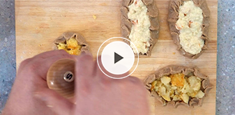

¹НеоШеф.
Влад Пискунов,
Шеф-повар ресторана «Матрешка»
Популярный гастрономический блогер, автор кулинарных книг и проекта «Московский обед», ведущий кулинарной рубрики программы «Фазенда» на Первом Канале и программы «Огненная Еда» на канале Кухня ТВ.

Калитки
от Влада Пискунова